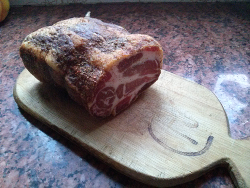

Incursionando en los embutidos
Una de las tantas cosas que me gusta hacer como pasatiempo es cocinar, y hace mucho tiempo que tenia ganas de empezar a probar con los fiambres caseros.
Busque un poco en Internet, y encontré la bondiola, la cual parece ser uno de los embutidos más fáciles para hacer.
La hice, y salio muy bien, Así que ahora tengo ganas de hacer otros embutidos como Jamón Crudo y Quesos, y obviamente, otra bondiola, porque ya la comimos.
Así quedo la bondiolita casera.

Comentarios
Comments powered by Disqus